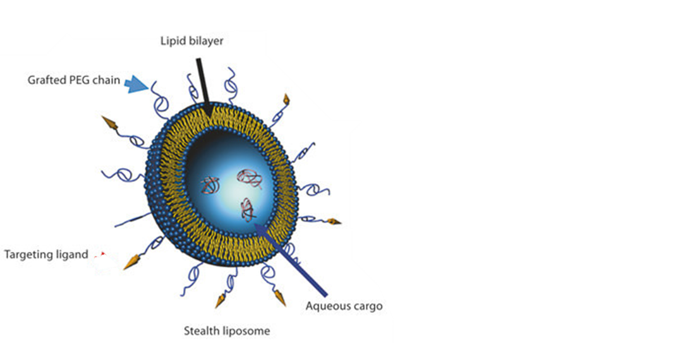
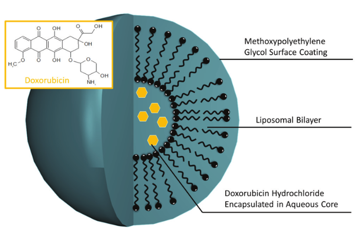

Stealth Nanocarriers in Cancer Therapy: PEGylation and Its Evolution
CHEMIC 화학공학과 학술 세미나 발표. 생명대에서의 경험으로 나노의약품의 "스텔스" 특성을 만드는 PEGylation의 원리와 한계, 그리고 이를 대체할 차세대 고분자들을 리뷰하고 발표해 세미나 대상을 수상했습니다.
개요
나노의약품(Nanomedicine)은 분자 수준에서 질병을 진단·치료하는 나노기술의 한 갈래로, 표적 전달·조절 방출·독성 감소를 위해 나노입자(1~100nm)를 활용합니다. 이 세미나에서는 나노입자를 면역계로부터 숨겨 순환 시간을 늘리는 "스텔스" 코팅 기술 중 가장 널리 쓰이는 PEG(Polyethylene glycol)에 초점을 맞춰, PEG가 어떻게 면역 회피를 가능하게 하는지, 반복 투여 시 왜 면역원성을 띠게 되는지, 그리고 이를 어떻게 예방할 수 있을지를 문헌을 통해 조사했습니다.
PEG의 스텔스 효과
PEG 사슬은 친수성이며 유연해 수용액 환경에서 나노입자 표면에 구름처럼 퍼지는 Conformational Cloud를 형성합니다. 이 구조가 혈액 내 단백질(옵소닌, 보체)과 면역세포(대식세포)의 직접적인 접촉을 막는 입체 반발(Steric Repulsion), 수화층 형성, 표면 결합을 에너지적으로 불리하게 만드는 동적 운동(Dynamic Motion)을 통해 스텔스 효과를 만들어냅니다.
종양 조직은 혈관이 느슨하고 림프 배출이 적어 나노입자가 더 잘 축적되는 EPR 효과(Enhanced Permeability and Retention)를 보이는데, PEG로 순환 시간을 늘리면 이 EPR 효과와 시너지를 내 종양 표적 효율이 높아집니다.

실제 사례로 최초의 FDA 승인 나노의약품인 Doxil®(PEGylated 독소루비신 리포좀)은 PEG 코팅으로 순환 시간을 늘리고 EPR 효과로 종양에 수동 표적되도록 설계되었습니다.

하지만 반복 투여되면 T세포 비의존적(TI) 항원 인식을 거쳐 Anti-PEG IgM/IgG 항체가 생성되고, 이는 ABC 현상(Accelerated Blood Clearance)으로 이어져 약물이 예상보다 빨리 혈중에서 제거되는 문제를 일으킵니다.
PEG의 한계 — 세 가지 사례
- Pegloticase(통풍 치료제): 약 38%의 환자에서 anti-PEG IgG/IgM이 생성되어 치료 효과가 저하되고 일부 염증이 유발됨 — 항체 생성 환자는 비반응자(Non-responder)로 이어짐
- PEG-asparaginase(백혈병 치료 효소): 일부 환자에서 anti-PEG 항체가 생성되어 약물 저항성(resistance)이 발생
- Pegnivacogin(항응고제): 기존 anti-PEG 항체를 보유한 환자에서 첫 투여임에도 아나필락시스가 발생 — PEG가 비면역원성이 아님을 보여주는 사례
또한 PEG는 생분해되지 않아, 저분자량 PEG는 너무 빨리 배설되어 약효 지속시간이 짧아지고, 고분자량 PEG는 신장에서 배설되지 않고 리소좀에 축적되어 공포화(vacuolization)와 면역학적 거부 반응을 유발할 수 있습니다.
PEG 대안 고분자
대안 고분자가 갖춰야 할 4가지 요건: 생분해성(또는 배설 가능성), 낮은 면역원성, 효과적인 스텔스 특성, 효율적인 약물 전달.
| 고분자 | 생분해성 | 면역 반응 | 스텔스 성능 |
|---|---|---|---|
| PEG (기준) | No | 다수 환자에서 Anti-PEG IgM/IgG 유도 | 1차 투여 시 우수 |
| Polysarcosine (pSar) | Yes | 최소 면역원성 | PEG와 유사 |
| Poly(2-oxazoline) (POx) | 부분적 | 낮음 | 우수 |
| Poly(phosphoester) | Yes | 생체적합성 우수 | 우수 |
| Hyperbranched Polyglycerol (HPG) | No | 비면역원성 | 우수 |
| PLGA | Yes | 우수한 생체적합성 | PEG보다 약함(단독 시) |
이 중 PLGA(Poly Lactic-co-Glycolic Acid)는 젖산·글리콜산으로 안전하게 대사되고 FDA 승인을 받은 소재로, PEG와 블록공중합체(PEG-PLGA)를 이루면 PEG의 스텔스·EPR 표적 능력과 PLGA의 비면역원성·조절 방출 능력을 함께 가질 수 있습니다. 다만 PEG-PLGA도 ABC 현상과 anti-PEG 항체 노출 문제를 완전히 없애지는 못하며, PLGA 부분의 완전한 생분해성만 확실히 개선된 지점입니다.
결론 및 의의
- PEG로 표면 개질한 PLGA 나노입자는 비-PEG화 입자보다 면역 내성 향상 가능성을 보여줌
- 삼중음성 유방암 치료 연구에서 PLGA-PEG 마이크로스피어가 표적 항암제를 성공적으로 캡슐화해 독성·부작용을 줄이며 치료 효과를 개선
- PEG-PLGA 나노입자는 PSMA를 발현하는 전립선암 세포에 선택적으로 결합해, 비기능화 나노입자 대비 3.77배 높은 종양 축적을 보임
- PEG-PLGA 구조는 친수성·소수성 약물을 모두 안정적으로 탑재할 수 있어 약물 전달 매체로서 잠재력이 큼
배운 점 & 향후 연구 방향
- 스텔스 효과처럼 "약물을 면역계로부터 숨긴다"는 개념이 실제로는 화학 구조(입체 반발, 수화층)와 생리 현상(EPR)이 맞물려 작동한다는 것을 문헌을 통해 구체적으로 이해했습니다
- 널리 쓰이는 표준 소재(PEG)도 반복 투여·환자군에 따라 예상 못한 부작용(ABC 현상, 아나필락시스)을 일으킬 수 있음을 확인하며, 대안 소재를 평가할 때 생분해성·면역원성·전달 효율을 균형 있게 봐야 한다는 점을 배웠습니다
- 향후 연구 방향으로는 PEG/PLGA 비율에 따른 스텔스-면역원성 트레이드오프, pH·효소 반응성 PEG-shedding 전략, 환자별 면역 프로파일에 따른 맞춤 전달체 설계 등이 제안되었습니다